The Default Assumption
The phrase you’ll hear in a thousand conference rooms is some variant of “we should just be more active on social.” It usually arrives without any specific channel in mind, without any specific audience in mind, and without any specific outcome in mind. The implicit theory is that social is so big and so cheap that simply being there, posting consistently, occasionally being clever is sufficient. Followers will accrue. Posts will reach those followers. Good posts will go viral. Sales will follow. The work is to post; the platform will do the rest.
The trouble is not that the theory was always wrong. It was a fair description of how Facebook, early Instagram, and Twitter worked between roughly 2008 and 2017, it stopped being one around 2018, and almost nobody updated it. It’s the position your CEO holds, the advice in most generalist marketing books published before 2022, and the framework most of your classmates are using on group projects right now — partly because they use social themselves and assume their own experience of it transfers to a brand’s.
None of what follows is an argument that the channel is shrinking. It isn’t. DataReportal counted roughly 5.8 billion social media identities in April 2026, about 294 million more than a year earlier (DataReportal, 2026). That’s more than nine out of ten internet users, each active on six or so platforms, spending something on the order of 18 hours a week — roughly two and a half hours a day, or about a sixth of their waking life — inside social and video feeds. Per-person time has plateaued since about 2023, but it plateaued at a historic high while the population kept growing. Social media is a larger part of daily life than it has ever been.
People value social for entertainment, for connection, for surprise and delight with a little information mixed in. None of that value is transferable to a brand by default.
The size of the channel is what makes the leap feel safe: everyone is here, for hours a day, so surely a brand should be too. But you experience the platform as a consumer — default-on, recommendation-fed, casual. A brand trying to reach you is fighting the same algorithm that’s feeding you AI-generated raccoon videos and your cousin’s vacation photos, and it’s asking for attention you came here to spend on something else. How much people use social tells you how much attention exists. It tells you nothing about how much of it a brand can have.
The point of Rethinking Social is not to argue that social media is dead, or that brands should leave it. The point is to sift through the noise so that when you make a recommendation about social — how much to invest, what to invest in, what to expect — you’re working from a 2026 picture of the channel and not a 2014 picture. The point is to stop shouting and start choosing.
This unit reads through a consumer-brand / CPG / DTC lens. The examples (Kleenex, Heinz, Wendy’s, Liquid Death), the platform priorities, and the audience math all reflect that lens. The mechanics apply across categories — reach collapsed for everybody, attribution broke for everybody — but the conclusions diverge. B2B plays a different game (LinkedIn is the primary channel; the buyer is a small committee). Higher ed and nonprofits measure donations, applications, and advocacy rather than retail sales. Local businesses often get more from social-as-search than social-as-broadcast. When a recommendation here doesn’t fit your situation, the mismatch is usually category, not mechanics — translate the principle, replace the example.
Five pieces follow: this one on the state of the channel, #2 on what organic is for now that it isn’t for reach, #3 on paid social and where that budget is going, #4 on how to run the channel well, and #5 on what all of it does to IMC, PESO, the funnel, and brand vs. performance. Two standalone companions — UGC and influencers — sit alongside Part 4.
What Social Used to Be
Early social platforms were what the name advertised: social-graph networks, where the relationships between users decided what got shown to whom. Your feed carried your friends’ posts in roughly the order they were posted, and a brand you followed appeared on the same terms as everyone else. Facebook’s average organic reach in 2012 was roughly 16% of followers per post (Hootsuite, 2026): a page with 100,000 fans could expect 16,000 of them to see an update without spending a dollar. Against print, broadcast, or direct mail, that was an extraordinary deal — buy the follower base once, collect the reach indefinitely. “Social is free” wasn’t a CEO fantasy in 2012. It was approximately true.
It was also when social-media-as-marketing-discipline got built: the tools, the agency divisions, the content calendars, the “3-2-1 rule” for post mix, the always-be-posting consultant industry. All of it was designed against a 10–16% organic reach baseline, and most of it is still being taught.
The toolkit, the conventional wisdom, and the “just be active on social” advice all date from a period when the platforms actually distributed brand content. The platforms stopped. The advice didn’t.
What Changed, in Five Moves
The distance between “social is essentially free” and “your post reaches 1% of your followers” is a sequence of platform decisions rather than a single event. Two of them do most of the work in everything that follows. In January 2018, Facebook rewrote the News Feed to prioritize “meaningful social interactions” — posts from friends and family over content from businesses, brands, and media (Axios, 2018). The framing was user well-being; the effect was that brand organic reach collapsed and paying to promote became the only reliable way back into the feed. Paid reach was unaffected. In April 2021, Apple’s iOS 14.5 required apps to ask permission before tracking users across other apps and websites. Roughly 75% of iOS users declined, and Meta’s tracking accuracy fell 30–40% almost immediately (LeoAds, 2026). The first pivot broke distribution; the second broke measurement. Full mechanics of the second are in Part 3.
Social graph is the distribution mechanism; brand pages get 10–16% organic reach. Facebook’s 2012 IPO starts the long, quiet decline as monetization pressure builds.
Facebook prioritizes friends and family over brands and media. Brand reach falls off a cliff within twelve months. One nonprofit tracked its own reach from a 40–90% range down to under 10% inside the year (Madden, 2021).
Roughly 75% of iOS users opt out of cross-app tracking. Precision targeting and attribution both degrade and don’t recover. A COVID usage spike masks the decline for a year or two.
Instagram, Facebook, YouTube, and eventually LinkedIn pivot to TikTok-style feeds: what you see is the algorithm’s bet on what holds attention, not who you follow. Generative tools simultaneously make low-effort content nearly free to produce.
Non-Premium accounts see essentially zero organic reach in a large share of cases — the most extreme version of a model the other platforms have been edging toward for years.
Every step had a rationale that made sense from the platform’s side: Facebook needed ad revenue, Apple wanted privacy as a competitive feature, TikTok had proven discovery feeds beat graph feeds for time-on-app. Brands were never the customer in any of these decisions. The free-reach era that built the discipline was a side effect, and when the side effect stopped serving the platform’s business, it ended.
Why Audiences Disengaged
The platform pivots are half the story. The other half is what audiences did in response, which the “platforms killed organic reach” narrative tends to skip, because blaming your customers is less satisfying than blaming Mark Zuckerberg. Engagement is down partly because the algorithm shows fewer brand posts, and partly because people stopped engaging with the brand posts they do see. Four reasons.
1. Over-marketing and over-posting
The first reason is straightforward and partly self-inflicted by the industry. As organic reach dropped, the standard consultant advice became post more. If 4% reach was the new normal, the math implied that posting four times as often would restore the absolute numbers. The math was wrong. Posting more crowded feeds with more brand content from the same brands, which trained users to scroll past brand content faster, which raised the bar for any individual post to earn engagement, which made the average post perform worse, which led to recommendations to post even more. The discipline ate itself.
The related failure is the over-promotional feed: organic posts that read like discounted-product ads, calls-to-action where content used to be. Users treat that feed the way they treat actual ads — they scroll past faster — and the algorithm reads the scroll-past as low quality and shows the brand to fewer people next time. It’s the trap your awareness creative notes warn about in another context: short-term activation cannibalizing long-term reach.
2. AI slop
The second reason is the one you’ll recognize on sight. Generative tools became cheap, fast, and good enough in 2023–2025 to produce video, image, and text at industrial scale. The output isn’t good and isn’t meant to be; it only has to be cheap and plausible enough to earn engagement-based ad revenue, which it is. Merriam-Webster named slop its 2025 Word of the Year, defining it as low-quality digital content produced in quantity by AI (Merriam-Webster, 2025); NPR’s year-end coverage tracked how thoroughly it saturated feeds (NPR, 2025).
The brand consequence is twofold. Audiences trust feeds less — most users report finding content less trustworthy when they suspect it’s AI-generated (AI in Asia, 2025) — which is a structural problem in a medium where audiences came looking for authenticity and have no reliable way to tell what’s real. And the bar for worth my attention rose with the volume of competing content. The denominator changed; the brand’s one post did not.
Television was the canonical noisy channel — roughly 25 to 28 commercials in an hour of broadcast (MOCK Agency, 2025). A feed has no comparable ceiling. The brand’s one post competes against an effectively unlimited supply of friends, creators, entertainment, news, and synthetic content, most of it produced by people or systems working full-time to win the same second of attention. Attention scarcity is the constraint, not the number of competing advertisers.
3. Persuasion fatigue and the “everyone is selling me something” problem
Most of what moves through a feed now is an ad, a sponsored post, an influencer placement, an affiliate link, or an organic post built to sell something. The user response is the obvious one: stop treating the feed as information about your friends’ lives and start treating it as a marketing channel to be defended against. Advertising research has a name for the resulting state — advertising avoidance. The casual term is scrolling without reading anything.
The consumer side of this is now well-documented. Hootsuite’s 2024 Social Media Consumer Report (Hootsuite, 2024) found that 52% of consumers say they’re exhausted by self-promotional brand content — not by ads specifically, but by the broader pattern of brand accounts treating the feed as a venue for selling. A majority of consumers, telling researchers they are tired of brand presence on the channels brands are working hardest to be present on.
The report sorts its findings into three themes — Sins & Virtues, Building a High-Value Following, and Paid vs. Earned vs. Shared — and is worth twenty minutes of skimming: Hootsuite, The Social Media Consumer Report 2024. Three findings carry the argument here:
- The five things most likely to make someone unfollow or hide a brand: clickbait (76%), inauthentic content (68%), boring content (68%), repetitive content (68%), and openly angling for engagement (63%). Posting more without saying more is on the list.
- Active Shoppers — the followers most likely to actually buy — are harsher critics of weak craft than casual followers, not more forgiving.
- What consumers say they want instead: to learn something new (56%), to laugh (55%), to be inspired (47%).
4. The retreat to private channels (dark social)
The fourth reason doesn’t appear in any platform’s public metrics, because it isn’t happening on platforms with public metrics. A large share of genuine peer sharing now moves through private channels (Intent Amplify, 2025) — messaging apps, workplace tools like Slack and Teams, and invite-only communities such as Discord servers and private subreddits. The conversation that used to happen in a Facebook comment thread in 2012 moved into group chats a long time ago.
It’s worth noticing what that implies about the platforms themselves. Some of the largest and fastest-growing “social” platforms were never social platforms in the marketing sense at all. WhatsApp reports roughly 3 billion monthly users, and DataReportal’s 2026 data shows it generating more daily sessions than any other major social app (DataReportal, 2026). It is a messaging utility with no feed for a brand to appear in, no follower graph to build, and no public metrics to report. The same is true of iMessage, Signal, Telegram, and the group-chat layer inside every other app.
Ideas that originate on the public feeds are very likely a large part of what gets forwarded into those rooms — the screenshot, the link, the clip a friend sends with you need to see this attached. That forwarding is where a recommendation actually carries weight, because it arrives from a person rather than an algorithm. And there is no way to measure it. The share is unmeasurable by definition, which is the point rather than a gap in the research: much of what is being said about a brand is happening behind a closed door, and the brand has no way in and no way to count it.
Brands that recognized this early build and moderate their own private surfaces rather than chasing the conversation across public platforms. Notion is the frequently cited case: unpaid community ambassadors run its Discord, answer questions, and produce educational material, and the brand gets product feedback that reaches it through no other channel (NoGood, 2025). Part 2 treats this as one of organic’s real jobs.
Smaller currents reinforced all four: cohort effects, the public argument about social media and mental health, algorithm fatigue among users who can no longer predict their own feeds, toxic comment sections suppressing participation, and platform fragmentation. None would carry the engagement collapse alone; together with the four above they explain its severity.
- Over-posting created its own audience-fatigue problem on top of the platforms’ algorithmic decisions.
- AI-generated content saturated feeds starting in 2023, lowering trust and raising the attention bar for everything else.
- Users learned to read social feeds as marketing channels and increased their resistance accordingly.
- A large share of the actual community-and-conversation activity moved to private channels (DMs, group chats, Discord, Slack) where brands have very little visibility.
“Social Media Isn’t Social Anymore”
Put the supply-side and demand-side stories together and what you have is a category of products that no longer fits the name on the box. TikTok, Instagram Reels, YouTube Shorts, Threads, even Facebook’s main feed at this point — these aren’t social networks in any meaningful sense. They’re algorithmic media feeds with a comment section. The thesis is being argued by a growing number of practitioners; the cleanest single statement of it is the first anchor source for this unit.
People still use social media socially. The DMs, the group chats, the niche subreddits, the Discord servers — all still social in the original sense. What changed is narrower than the headline: the main public feeds stopped being reliable social-graph distribution systems for brands. Users relocated the social activity rather than abandoning it — public feed to consume, DMs to converse. People still like the platforms; the platforms stopped working the way brands assumed they did.
Gee is co-founder of Media Futures Market, a London media-investment firm. The piece opens with his 2006 Pondicherry internet-café story to anchor what social media originally was, then argues that the current platforms have become something else: “It’s not about who you know anymore” but about what the algorithm expects will hold attention long enough to monetize. His formulation of the shift is the one worth carrying: “You’re not part of a community. You’re an audience.” He notes that by Meta’s own disclosures, friend-generated content on its platforms is in sharp decline — people use the apps in enormous numbers but behave differently inside them, scrolling rather than talking. Meanwhile marketers keep building “social content calendars” and managing “community” channels on surfaces where the social layer has largely dissolved.
Read the full piece at ExchangeWire → Gee’s argument is the lens to keep in mind through the rest of this unit. The reach numbers in §05, the conversion paradox in Part 3, and the “rebuild a community” argument in Part 4 all sit on top of it.Gee is not alone, and the parallel argument from the academic side is less about marketing efficiency than about what the platforms stopped doing for civic life. Deb Roy (MIT), Lawrence Lessig (Harvard), and Audrey Tang argue that systems optimized for engagement reward provocation over the listen-and-test-ideas behavior real communities require, producing what they call a broadcast posture on platforms originally framed as town squares (Roy et al., 2025). Duncan Brumby, writing in ACM Interactions, notes that X now sits largely silent for the professional and academic community it once hosted, and that the gathering didn’t stop — it relocated to Bluesky, Discord, newsletters, and group chats (Brumby, 2025). Both point where the dark-social finding points: the community work moved to surfaces that report nothing publicly.
Not everyone accepts the thesis, and the dissent comes in two grades. The consultant version holds that organic still works “when done right” — post consistently, go platform-native, focus on the audience — without engaging the reach data directly (Pathfinder, 2026). Read it for the tone; it’s the tone of a social-media-management retainer pitch, and recognizing it is half of resisting it. The sharper version comes from the growth agency NoGood, which concedes the old playbook is gone and argues the path forward runs through human creativity, intellectual authority, and platform-specific work — TikTok-as-search, employee-generated content, brand-owned communities (NoGood, 2025). That second position is close to where Part 4 lands.
The honest version of the dispute is narrower than either set of headlines. Almost nobody serious argues that consistent posting without paid support produces 2014-level results in 2026. The disagreement is about the path forward: work harder and smarter on the same channels, or accept a more substantial rethink in which some of what brands still attempt on Facebook and Instagram organic moves to dark social, creator partnerships, or off-social channels entirely. Part 4 picks up that thread.
What the Numbers Actually Say
The argument so far has been mostly thesis. The reach data is the part that’s easy to look up and hard to argue with. Trackers don’t return identical numbers, but they return numbers pointing the same direction, and they show the same arc since 2012.
The most current platform-by-platform synthesis available as of this writing, pulling together Emplifi’s paid-placement and follower data with engagement trackers from Socialinsider and others. The useful finding is the spread: reach and engagement aren’t declining uniformly, and the picture varies by platform, by format, and by whether you’re organic or paid. One counter-intuitive detail worth carrying — on Facebook, live video and link posts drew the most organic reach in 2025, running against the standard advice to chase Reels, because live broadcasts generate the real-time comment signal the algorithm weights heavily.
Read the full ALM Corp analysis →Reach by platform, 2025–2026
Read the chart below as a snapshot, not a law. Trackers disagree on the exact percentages, platforms redefine what they count often enough that year-over-year comparisons drift, and reach varies sharply by account size, format, and category. The spread between platforms is larger than the spread between measurement methods — that spread is the durable finding; the decimal points are not.
Facebook’s 2012 organic reach was roughly 16% — off the right edge of that chart by an order of magnitude. The chart isn’t showing a decline; it’s showing the floor the decline left behind.
The obvious objection to everything above is the TikTok that did four million views from a 4,000-follower account. It’s a real objection, and the answer sharpens the argument rather than weakening it. Discovery feeds don’t distribute to your followers; they audition your post against everyone else’s for a stranger’s attention. That raised the ceiling — reaching two million people who’ve never heard of you was impossible on a 2013 graph feed — and lowered the average, because the typical post now loses that audition. Distribution moved from reliable and small to unpredictable and occasionally enormous. The brands held up as proof that social still works the old way (Duolingo, Liquid Death, Wendy’s) are the visible winners of that lottery, with real craft behind the entries. Planning a program around winning it is not a strategy, and the expected value of any given post fell even as the maximum rose.
There’s a second cost the view count never shows. Sprout Social’s 2025 Index asked 4,000 consumers how they read brands jumping on viral trends (Sprout Social, 2025). Forty percent said it’s cool. Thirty-three percent said it’s embarrassing. Twenty-seven percent said it only works inside the first 24 to 48 hours of a trend’s life — which is roughly the time it takes most brands to get a post through legal and approvals. Trend participation is therefore a bet placed with a third of the audience wincing, on a window that has usually closed by the time the brand can act, in a format the algorithm reads as derivative because it has already seen it a thousand times. There is also a trade argument, harder to pin down but widely reported by practitioners, that a viral hit can depress engagement on everything a brand posts after it.
Search for advice on how to go viral and you will find an endless supply of it. Some of it converges. Much of it contradicts, because one person is coaching an underdog makeup brand and the next is telling a dental practice how to blow up, and those are not the same problem. The nine posts above come at it from the other direction: they ask whether viral should be the goal at all, and what it costs when you get it. That question is worth more to a brand than any of the tactics.
Engagement, separately
Reach is whether the post appears in front of someone; engagement is whether they do anything about it. Both fell. ALM Corp’s engagement analysis (ALM Corp, 2026b) found 2025 declines across every major platform — Instagram down 28% year-over-year on the median post, median X engagement at 0.03%, and Threads down 18% as its user count grew faster than activity per user.
The combined math is brutal. A brand with 100,000 Facebook fans posting a typical update reaches roughly 1,500 followers (1.5% reach) and gets engagement at roughly 0.11% of those reached — under two interactions on a post that nominally has a hundred-thousand-person audience. The post looks healthy on the brand’s internal dashboard (reach: 1,500 ✓; engagement rate: 0.11% ≈ industry average ✓), and produces approximately zero business value.
Followers Aren’t Reach. And Reach Isn’t the Customer Base.
A common analytical error in marketing meetings is the assumption that follower count is a rough stand-in for the brand’s customer base. Big brand, many customers, many followers, many people seeing the posts. That isn’t how the math works, and the cleanest way to see it is a brand whose customer base is among the largest in American consumer goods.
What “Kleenex-sized” actually means
Kleenex has been on US shelves since 1924, reaches roughly 90% of US households through near-universal retail distribution (Ad-Hoc News, 2026), and holds something like 45% of the US facial tissue market (Cetrix, 2024). Its name is a generic trademark — used to mean facial tissue in casual American English, the status brands spend fortunes chasing because it means the brand stopped being an option in the category and became the category. Coca-Cola, Google, Band-Aid, Kleenex.
Now the social numbers. As of this writing, Kleenex has roughly 56,500 followers on Instagram. According to Socialblade tracking, the brand averages 21 likes and one share per post, with an engagement rate of 0.04%. Not four percent. Not point-four percent. Point-zero-four percent. The same brand has roughly 708,000 followers on Facebook; the last twenty-five posts show like counts in the 8-to-20 range. Eight to twenty likes. On a page with more than seven hundred thousand declared fans (Socialblade, 2026).
Kleenex’s customer base runs to hundreds of millions of Americans. Its Instagram following is 56,500 people, on the order of one in several thousand of the brand’s actual users, and the slice of that fraction engaging with any given post averages twenty-one humans. A brand that reaches nine of every ten American households at retail has a social audience small enough to fit in a high-school auditorium, and a per-post interaction count that is negligible against its actual scale.
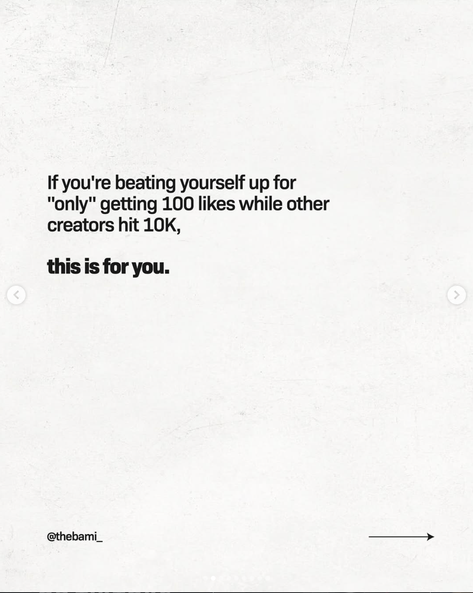
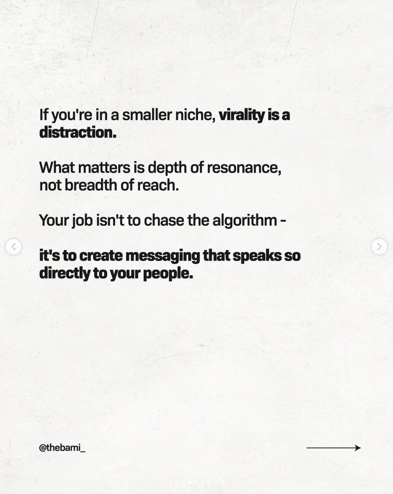
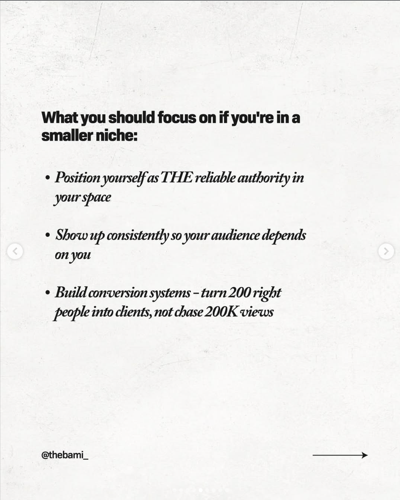
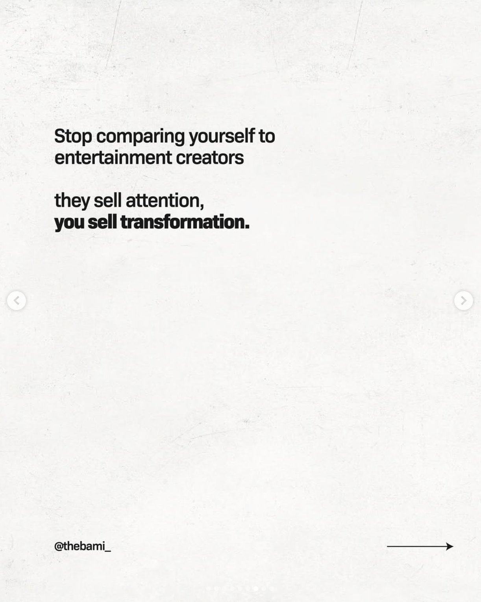
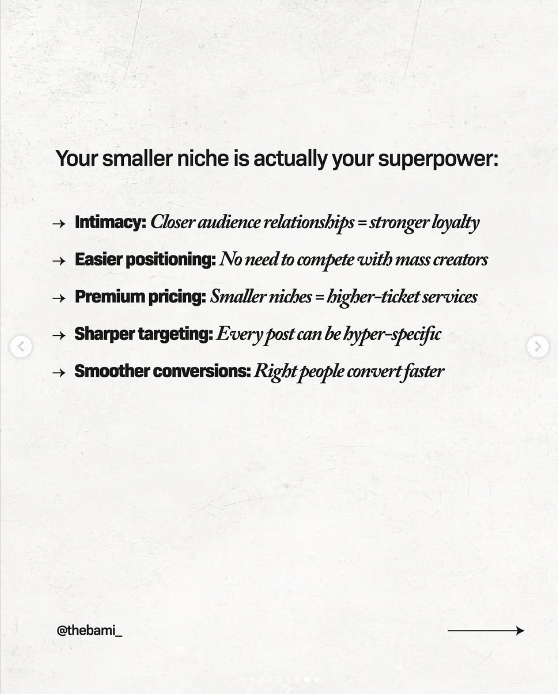
The same finding as the Kleenex math, arriving as encouragement. A creator carousel telling small accounts to stop measuring themselves against 10,000 likes is, underneath the pep talk, a description of how distribution now works: reach is small by default, for nearly everyone.
Note what the advice becomes once that’s accepted. Not get more views. Position yourself as the authority, show up consistently, build something that converts 200 right people rather than chasing 200,000 of the wrong ones. That is a brand strategy wearing a creator’s clothes — and it is roughly where Part 2 ends up.
The follower-count fallacy
The second version of the confusion is that growing the follower count is itself the work. At Facebook’s current reach, a 100,000-follower page reaches about 1,500 people per post, so doubling the page from 50,000 to 100,000 followers adds roughly 750 actually-reached humans per post. Follower acquisition is being priced as though reach still followed it. It doesn’t.
The engagement that does come back — likes and shares from the sliver of followers actually reached — gets aggregated, dashboarded, and reported as if it described the brand’s relationship with its customers. Kleenex’s 0.04% reads as “in line with industry average.” Heinz’s like counts look healthy. Both numbers describe an audience that was never the customer base.
Hootsuite’s consumer report frames the same problem as “building a high-value following”: the question is which followers, not how many. Three findings from that chapter cut against a purely dismissive reading of the Kleenex math:
- 70% of people who follow a brand plan to buy from it and 59% already have. The followers are few, but they are not idle spectators.
- 77% rate a brand’s social presence at 5 or better out of 10 in influencing what they buy — so the tiny slice that follows treats the account as substantive input.
- The least appealing thing a brand can do to earn a follow is post and interact constantly (64% rate it least appealing). That is direct empirical evidence against the “post more” reflex.
Three audiences, three different jobs
The corollary is that a single piece of brand content can reach three completely different populations, and those populations are not interchangeable. Call these the three audiences: strangers (reached by paid ads), followers (reached by organic posts), and loyalists (reached by direct sends). Each is a different job; treating them as one is the misallocation that drives most of the failures this unit catalogs.
Each audience suits a different job. The error is assuming “put it on social” covers all three. It covers two, both partially: the paid version reaches strangers at rising cost and falling precision, and the organic version reaches a scattered slice of the people who already declared interest — itself a scattered slice of the customer base.
- Customer base ≠ follower count. The biggest brands have followings that are a rounding error against their customers.
- Follower count ≠ reach. Organic shows the post to a small share of those followers.
- Reach ≠ engagement. A small share of those reached respond — so visible interaction is a doubly filtered sliver, not the customer base.
- At Instagram’s current ~4–9% organic reach, an 80,000-follower account reaches roughly 3,200–7,200 followers per post — not 80,000.
- Engagement at typical 0.7% rate on the reached audience yields ~25–50 interactions. The 600–1,200 likes the brand is getting is actually well above average.
- The expectation gap isn’t a performance problem; it’s a math problem the brand has been carrying since the “social is free” era. Reset the expectation; reframe what each post is actually for.
Why CEOs Still Think Social Is Free
The reach-collapse data has been in the trade press for years and the “social isn’t social anymore” thesis is well articulated. So why hasn’t the operating assumption inside most marketing departments moved?
Nobody asks a billboard to also close the sale and build community. Social can do more than one job, which is real — but brands often answer that flexibility by asking every post to do all of them at once: surprise, build emotional connection, feel authentic, showcase the product, drive traffic, close a sale. Because the channel is treated as free, the jobs never get sequenced across a week or a month; they get stacked into one post. The post does none of them well. The fix isn’t fewer jobs — it’s sequencing them deliberately, which is what Part 2’s content-calendar treatment is about.
The most honest answer is that there’s a self-reinforcing loop — call it the misallocation loop — and it’s hard to break. It goes something like this:
- The CEO believes social is essentially free. That belief was approximately true in 2014, and most CEOs formed their theory of social somewhere between 2010 and 2017.
- So social gets a low investment. A junior marketer or an intern runs it. There’s a calendar and a tool subscription, and no real budget for production, creative, or paid amplification.
- Low investment produces forgettable work, which earns roughly the engagement it deserves.
- Attribution can’t settle it either way. Since ATT (see Part 3), it’s hard to prove the program produces value and equally hard to prove it doesn’t. The dashboard sits in the “industry average” band, which reads as fine to anyone not looking closely.
- The prior is confirmed. Social is “free” (small budget) and “working” (average metrics), so the investment stays where it is, so the work stays mediocre, so the outcomes stay invisible.
- Creativity is the lever that gets starved. The variable creative-effectiveness research identifies as the largest controllable driver of performance gets the smallest budget and the least senior attention — and unlike the other steps, starvation leaves no visible artifact. It produces absences: variants not made, ideas not tested, distinctive assets not built.
Opinions on how to make your social media work are a dime a dozen. Twenty-three of them, collected in an afternoon, are above. The loop described in this section is fed by exactly this: an infinite supply of confident, free, contradictory advice, arriving faster than anyone can test it.
The loop is hard to escape because every step inside it is locally rational. The CEO isn’t wrong to be skeptical of unprovable returns. The junior team isn’t wrong to produce what its resources allow. The dashboard isn’t wrong to surface the metrics the platforms publish. The loop is wrong only in aggregate.
This isn’t theoretical. Hootsuite’s 2023 Social Media Career Report (Hootsuite, 2023) asked working social media managers what makes the job hard, and 56% said their bosses don’t understand social media — the most-cited hardship in the survey. The CEO problem isn’t a caricature; it’s the modal experience of the people doing the work.
The way out combines honest measurement of what organic actually contributes (Part 2), a clear view of what paid can and can’t do and at what cost (Part 3), and a case to the CEO that separates the channel social used to be from the channel it became (Part 5).
For now, the diagnostic move is the simplest one. The next time someone says “we should just be more active on social,” ask three follow-up questions:
1. Which audience are you trying to reach? The strangers (a paid job), the followers (an organic job), or the loyalists (a direct-send job)?
2. What outcome would prove this worked? Awareness, in-market consideration, conversion, customer service deflection, brand affinity? Each requires different measurement and different content.
3. What does “more” replace? If we add organic posting volume, are we taking time, attention, or budget from something else — including the paid amplification and direct channels that actually still distribute reliably?
If the answers come back as “all of them,” “general engagement,” and “nothing, we’ll just do it on top of everything else,” the recommendation is the 2014 playbook and it’s about to fail in the well-documented ways the rest of this unit catalogs.
- Social isn’t a social network anymore. The major platforms became algorithmic media feeds with a comment section somewhere between 2018 and 2024. The “social” in the name is mostly nostalgic.
- The reach collapse is the order-of-magnitude shift the rest of the unit responds to. Facebook 2012: ~16% organic reach. Facebook 2025: ~1–2%. Everything else is decoration on that ratio.
- Followers aren’t the customer base. A brand reaching 90% of US households at retail can have a social audience small enough to fit in a high school auditorium. Kleenex’s 0.04% engagement rate isn’t the program failing — it’s the math working exactly as it should.
- Three audiences, three jobs. Strangers (paid), followers (organic), loyalists (direct send). Each appropriate for different work; treating them as interchangeable is the rookie misallocation.
- Three diagnostic questions for any social recommendation: Which audience? What outcome would prove it worked? What does “more” replace? If the answers are “all of them, general engagement, nothing else,” the recommendation is from the 2014 playbook.
The Rest of the Unit
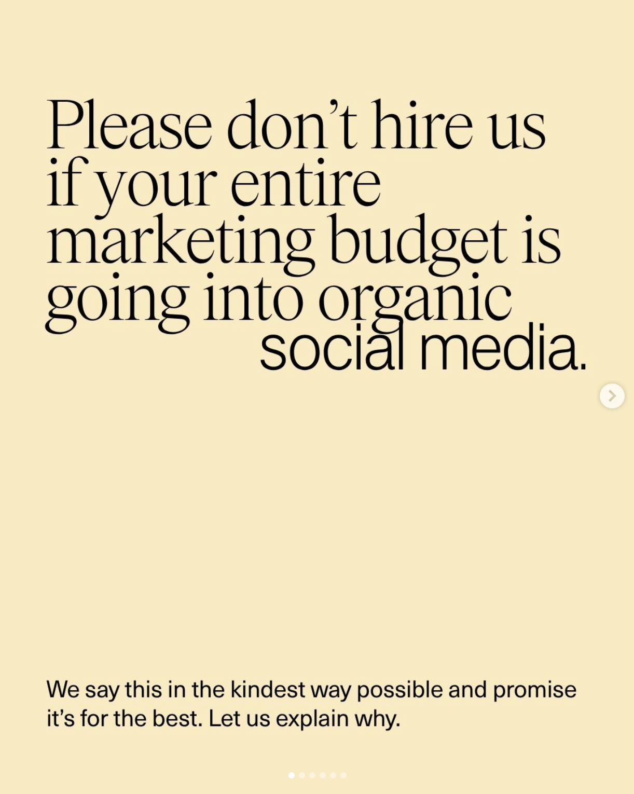
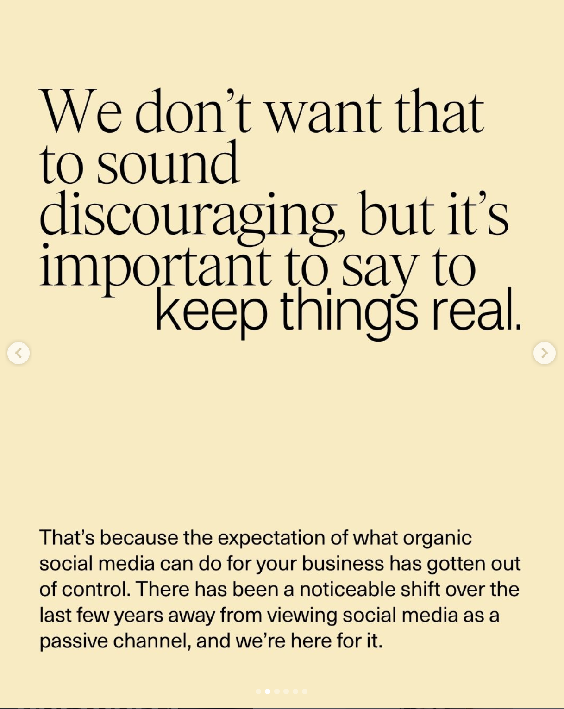
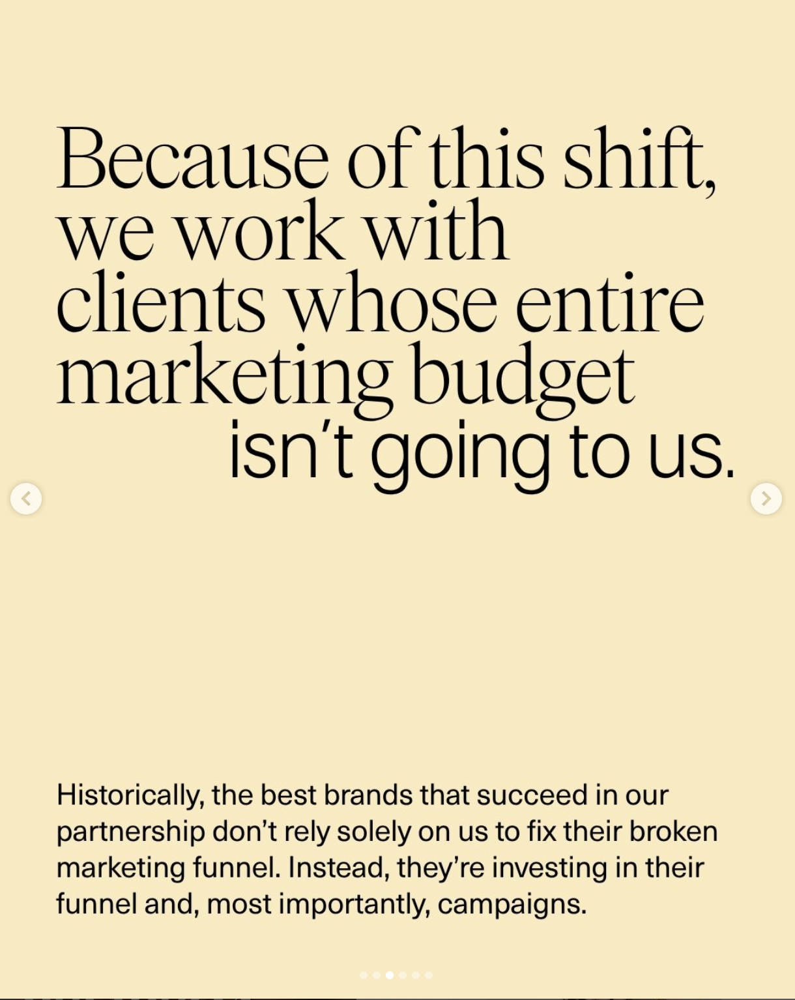
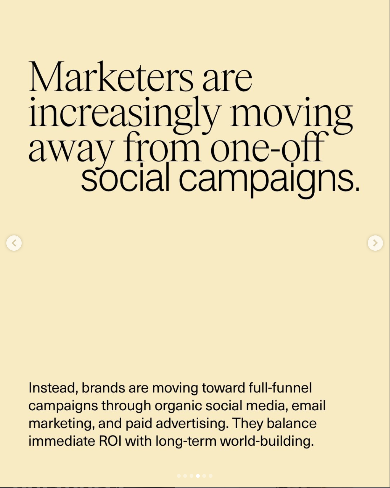
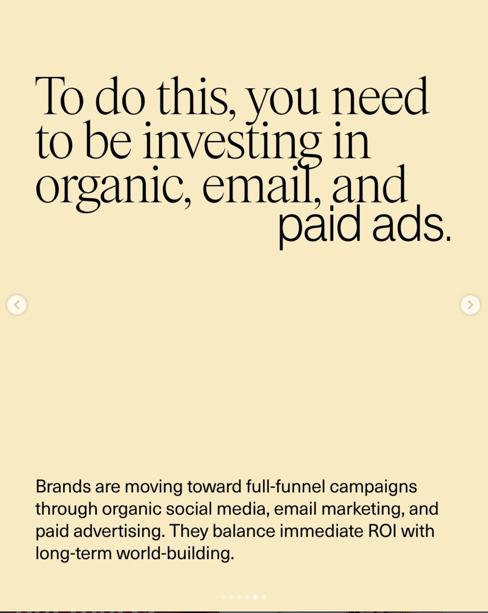
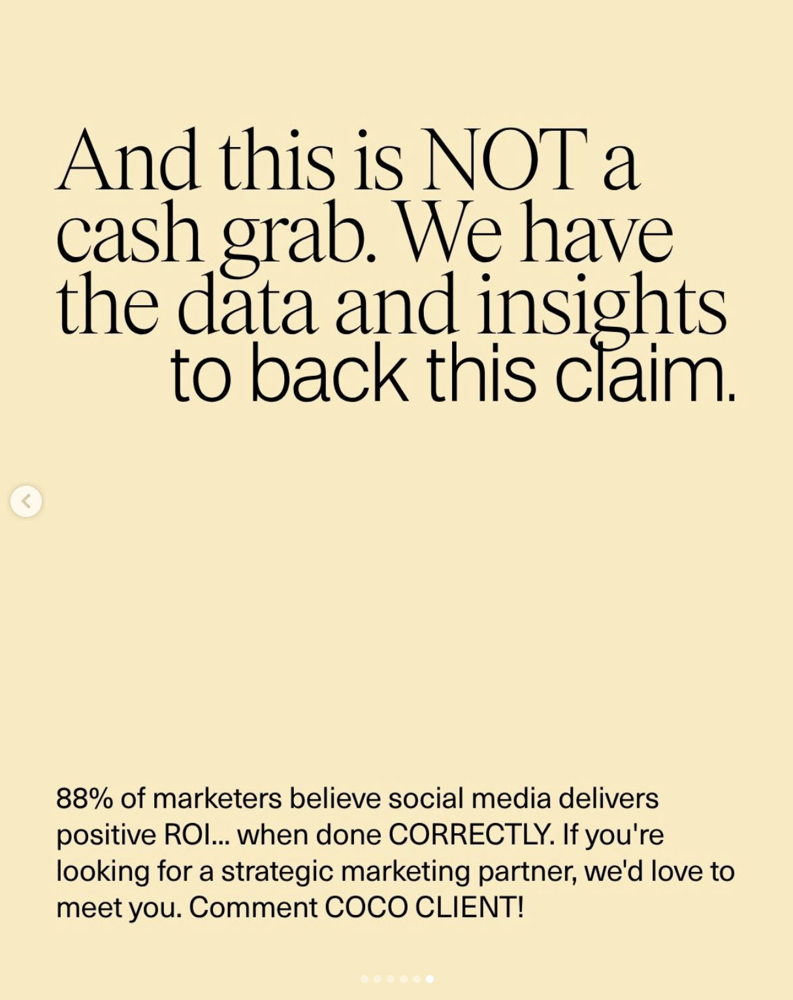
Coastal Collective Marketing opens this six-slide carousel with “Please don’t hire us if your entire marketing budget is going into organic social media” and closes by insisting it isn’t a cash grab. The caption makes the argument plainly: their most successful clients are the ones whose entire budget isn’t going to them, because a good strategy has range. One campaign gives the social team something to talk about; the social content gives email its context; paid amplifies whatever is already resonating; each touchpoint teaches you something about what the audience actually cares about. Marketing stops being a pile of separate tasks and starts behaving like a system.
That is an integrated marketing communications argument, made by an agency on Instagram, against its own short-term interest. It is also the bridge out of this piece: everything Parts 2 through 4 establish about what organic and paid can each do is only useful once the channels are working as a system rather than as a list. Part 5 is where that gets formalized.
Part 1 has been the framing. The next four pieces are the practical work.
Part 2 — Organic / Owned Social: What It’s For Now. If organic isn’t a reach channel anymore, what is it? Audience research, social listening, customer service, employee advocacy, community on platforms where community still works, creator partnerships, dark-social signal. Each of these is a real job; none of them is the “go viral and acquire customers” job most CEOs are imagining when they say “do more on social.”
Part 3 — Paid Social: Just Run Ads, Right? The fallback theory: if organic is broken, buy reach instead. CPMs are up roughly 20% year-over-year on Meta, attribution degraded badly after ATT, and AI broad-targeting has replaced the precise targeting paid social was famous for. Among advertisers increasing Connected TV spend in 2025, 36% named reallocated social budgets as a source, tied with linear TV — because CTV is where audiences sit inside one piece of content for thirty minutes or more, which is where brand-building creative can still land.
Part 4 — Doing It Better. The practical piece: given Parts 1–3, how do you actually run social in 2026? The audit, matching channels to jobs, the UGC and creator question, creative volume, and what to put in front of the person holding the budget.
Part 5 — How This Hits IMC, PESO, Funnel, and Brand vs. Performance. The synthesis. If the picture in Parts 1–4 is right, several of the frameworks you’ve already learned in this course need updating. Part 5 is the “here’s how it all reconnects” piece.
Glossary
Organic reach — the share of a brand’s followers who actually see a given post without the brand paying to promote it. Was roughly 16% on Facebook in 2012; is roughly 1–2% in 2025. The order-of-magnitude collapse this unit responds to.
Social graph — the underlying data structure of who follows whom, who’s friends with whom. The original distribution mechanism of early social platforms: your feed showed your friends’ posts because the graph connected you. Replaced after roughly 2020 by algorithmic discovery feeds in which the graph is mostly ignored.
Algorithmic feed / discovery feed — the current distribution model, in which what you see is decided by a recommendation algorithm trying to maximize your time on the platform, mostly without regard to who you follow. TikTok pioneered the model; Instagram, Facebook, YouTube, Threads, and now LinkedIn all moved toward it.
Meaningful Interactions — the rebranded News Feed algorithm Facebook rolled out in January 2018. Prioritized posts from friends and family over content from businesses, brands, and media companies. The single event most commonly named as the moment brand organic reach on Facebook collapsed.
App Tracking Transparency (ATT) — the iOS 14.5 framework, launched April 2021, that required apps to ask user permission before tracking them across other apps and websites. Roughly 75% of iOS users opted out; Meta lost 30–40% of its attribution accuracy and most of its precise-targeting capability. Full mechanics in Part 3.
AI slop — low-quality digital content produced at scale by generative AI tools, optimized for algorithmic engagement and ad revenue rather than human value. Merriam-Webster’s 2025 Word of the Year. The dominant content category by volume on most major platforms by late 2025.
Dark social — content sharing that happens through private channels (DMs, group chats, Slack, Discord, private LinkedIn messages, email forwards) and is invisible to standard analytics. Unmeasurable by definition, and the place a large share of genuine peer recommendation now happens.
The misallocation loop — the self-reinforcing cycle by which CEOs underinvest in social (because they believe it’s free), the underinvestment produces mediocre work and starves creative production, the mediocre work produces unprovable returns, and the unprovable returns confirm the CEO’s belief that further investment isn’t warranted. The substantive obstacle to getting social right in most organizations.
The three audiences — the distinct populations a single piece of content can reach: strangers (paid ad), followers (organic post), and loyalists (direct send by email, SMS, or private community). Treating these as a single “social audience” is one of the most common analytical errors in marketing meetings. As the Kleenex math in §06 demonstrates, even the followers audience is itself a tiny fraction of the brand’s actual customer base.
Generic trademark — a brand name that has been so widely adopted that it’s used to mean the whole product category (Kleenex for tissues, Band-Aid for adhesive bandages, Google for internet search). The status indicates the brand is no longer one option in a category; it has become the category. The Kleenex example in §06 shows that even this level of brand dominance does not translate into a social-media following anywhere close to the size of the actual customer base.
References
Sources cited in this piece, in APA style. Anchor sources (Gee and ALM Corp) appear first; the rest are alphabetical.
DataReportal. (2026). Digital 2026: Global overview report. DataReportal, in partnership with We Are Social and Meltwater. https://datareportal.com/reports/digital-2026-global-overview-report
Gee, D. (2025, July 1). Social media isn’t social. It’s just media. ExchangeWire. https://www.exchangewire.com/blog/2025/07/01/social-media-isnt-social-its-just-media/
ALM Corp. (2026, February 27). TikTok brand follower counts rose 200% in 2025 while Instagram organic reach fell up to 40%: A complete platform-by-platform breakdown. ALM Corp Blog. https://almcorp.com/blog/tiktok-brand-growth-instagram-organic-reach-decline-2025/
AI in Asia. (2025, December 22). AI ‘slop’ eroding social media experience. AI in Asia. https://aiinasia.com/life/ai-slop-eroding-social-media-experience
ALM Corp. (2026, March 10). Social media engagement declined in 2025: Instagram, LinkedIn & Threads data. ALM Corp Blog. https://almcorp.com/blog/social-media-engagement-decline-2025-instagram-linkedin-threads/
Axios. (2018, January 11). Zuckerberg on the Facebook changes. Axios. https://www.axios.com/2018/01/12/facebook-making-major-change-t-1515717798
Ad-Hoc News. (2026, April 1). Kleenex tissues: Kimberly-Clark’s timeless hygiene essential driving steady consumer demand in North America. Ad-Hoc News. https://www.ad-hoc-news.de/boerse/news/ueberblick/kleenex-tissues-kimberly-clark-s-timeless-hygiene-essential-driving/69049500
Brumby, D. P. (2025, May–June). Rebuilding the digital town square: Designing social media for meaningful connection (again). ACM Interactions, XXXII(3), 40. https://interactions.acm.org/
Cetrix. (2024). Why do people call tissue paper ‘Kleenex’? Cetrix Store Blog. https://cetrixstore.com/blogs/news/why-do-people-call-tissue-paper-kleenex
Hootsuite. (2023). Social Media Career Report: Happiness and hardships. Hootsuite Research. https://www.hootsuite.com/research/social-media-career-report/happiness-and-hardships
Hootsuite. (2024). The Social Media Consumer Report 2024. Hootsuite Research. https://hootsuite.widen.net/s/qtspqz6xpr/smconsumer2024_report_en
Hootsuite. (2026, March). What is organic reach, and how can you improve yours? Hootsuite Blog. https://blog.hootsuite.com/organic-reach-declining/
Intent Amplify. (2025, August 7). Dark social: 84% of sharing happens where analytics cannot track it. Intent Amplify. https://intentamplify.com/blog/dark-social/
LeoAds. (2026, February 27). How have privacy changes (iOS 14.5+) affected Meta Ads performance? Leo Answer Library. https://www.leoads.ai/answers/meta-ads/meta-ads-privacy-changes-impact/
Madden, C. (2021, December). The year Facebook killed organic reach. LinkedIn Pulse. https://www.linkedin.com/pulse/year-facebook-became-advertising-platform-christopher-madden
Martech Zone. (2025, May 12). Organic social media reach is dead: How to grow your following in 2025. Martech Zone. https://martech.zone/organic-reach-is-dead-how-to-grow-on-social-media/
Merriam-Webster. (2025). 2025 Word of the Year: Slop. Summarized in Vervocity, January 2026. https://vervocity.io/what-is-ai-slop/
MOCK Agency. (2025, March). How many TV ads per hour? MOCK Agency. Drawing on Nielsen Advertising and Audiences data. https://mocktheagency.com/content/how-many-tv-ads-per-hour/
Newsweek. (2021, July 28). Heinz launches petition to make hot dogs and buns equal number—here’s why they aren’t. Newsweek. Cites Statista data on 197.92M US Heinz ketchup users in 2020. https://www.newsweek.com/heinz-launches-petition-make-hot-dogs-buns-equal-numberheres-why-they-arent-1607372
NoGood. (2025, November 11). Dark social is shaping brand growth & visibility. NoGood Blog. https://nogood.io/blog/dark-social/
NoGood. (2025, December 30). The future of organic social in 2026: The biggest trends, predictions & strategic shifts. NoGood Blog. https://nogood.io/blog/future-of-organic-social-2026/
NPR. (2025, December 24). 2025 has seen an explosion of AI-generated slop. NPR. https://www.npr.org/2025/12/24/nx-s1-5629169/2025-has-seen-an-explosion-of-ai-generated-slop
Pathfinder. (2026, February 1). Organic social media isn’t dead. It’s just grown up. Pathfinder Blog. https://www.yourpathfinder.io/post/uncategorized/organic-social-media-isnt-dead/
Roy, D., Lessig, L., & Tang, A. (2025, February 25). Conversation networks. arXiv preprint. https://arxiv.org/pdf/2503.11714
Socialblade. (2026). Kleenex Instagram & Facebook account tracking. Socialblade. Follower counts and engagement-rate averages retrieved 2026. https://socialblade.com/
Sprout Social. (2025, January 7). The days of trend-chasing are over: A third of consumers think jumping on viral trends is “embarrassing” for brands [Press release]. The 2025 Sprout Social Index, Edition XX. https://sproutsocial.com/insights/press/
Socialinsider. (2025, May 14). Social media reach: Statistics for 2025. Socialinsider Blog. https://www.socialinsider.io/blog/social-media-reach/